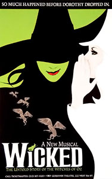
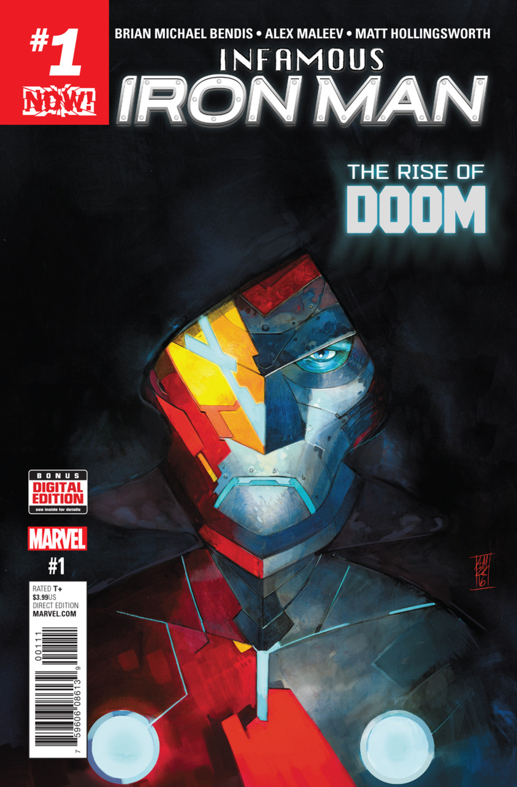
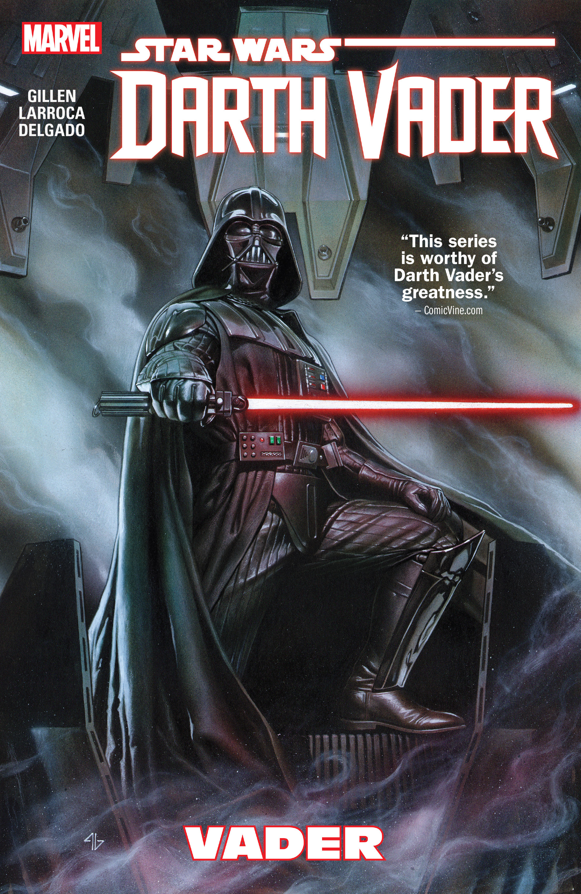

Hello World!
My name is Jun Ru Anderson. I'm a sophomore double majoring in math and computer science at Wellesley College. I'm a tutor for the Introduction to Computer Systems class and a research assistant in Professor Eni Mustafaraj's lab.
Outside of computer science, I love reading and writing. I've completed NaNoWriMo three times and participated in Camp Nanowrimo seven times. I also enjoy taking walks around Wellesley's Lake Waban.
Résumé
Get in Touch
Email: junru.anderson@wellesley.edu
LinkedIn: linkedin.com/in/junruanderson
GitHub: github.com/andersonic
Computer Science Department Tutor
- Answer questions on topics ranging from logic gates to C programming
- Hold weekly review sessions for 12 students and bi-weekly drop in hours for up to 25 students/li>
Research Assistant
- Identify credibility signals from news websites that can be used to combat fake news
- Use Selenium (web scraping) to automate the collection of a 455-sample dataset
- Use OpenCV (computer vision), scikit-learn (machine learning), and Keras (deep learning) to create models that predict credibility of news sources with up to 90.8% accuracy
Software Deployment Assistant
- Built scripts for use in deploying the school-wide Microsoft Windows 10 image
- Wrote and tested flags and batch files to silently install five applications
Math Instructor
- Taught math lessons to groups of four students on topics ranging from number sense to calculus
Brown Datathon: DiscoveryInsights
For this project, I worked with a data set provided by DiscoveryEngine, a non-profit that allows laypeople to rate academic papers along three metrics. Datathon participants were given the opportunity to decide what direction to take; I chose to investigate potential bias in paper ratings based on the author’s perceived gender. Given the DOI of the paper and the user ratings for each metric, I used the crossref api to find the author's name, and passed it to genderize.io to guess the author's gender. With this information, I was able to separate paper's and use SciPy to perform T-tests. Happily, I found no significant difference in the ratings of papers by male, female, and indeterminate (e.x., only first initial given) authors.
Congratulations to Jong and Vaibhav, with whom I tied for first place.
CS232-Artificial Intelligence: Pokémon AI
GitHub Repository
This project used Python to create a competitive Pokémon-playing agent. Pokémon is a stochastic game of asymmetrical knowledge, but most interestingly, has players choose actions at the same time (as opposed to chess or checkers, in which action choice is sequential). My team implemented three battling algorithms.
I implemented the random battling, whose performance was as poor as one would expect, and the expectimax algorithm, which peaked at ELO 1309 and had a GXE (expected long-term winrate) of 54.4% after 50 battles. I was also responsible for interfacing with the battle simulator, Pokémon Showdown, using the Selenium library.
Shoutouts to my partners, Dana and Hershel.
AP Computer Science:Tower Defense
GitHub Repository
A tower defense game written with Java, and my final project for AP Computer Science. The player builds defensive units to defend the player's tower and stop an invading force.
Shoutouts to Alice for being an awesome partner for this project.
HackUMassV: CheckIn
GitHub Repository
CheckIn allows the user to set automated daily check-ins with aging friends or relatives, and alerts the user if the check-in goes unanswered. CheckIn uses Python and Swift, and incorporates CMU Sphinx speech-to-text, Amazon Alexa text-to-speech, the DropBox SDK, and the JSON library for Python.
Shoutouts to my teammates David, Declan and Eric, all of whom were essential to our team's winning Best Hardware Hack.
WhackFall2017: Froodees
GitHub Repository
This webapp, built with Flask, HTML, and CSS, connects would-be wasted food with people in need. I worked almost exclusively on the back end, handling food submissions and location-based requests for food.
Shoutouts to my collaborators and fellow Wellesley women Marinn, Rachel, and Sandra.
Hobby Project: Ciphered Text Editor
GitHub Repository
A text editor that provides support for enciphering and deciphering file contents according to a key/code. Implements a few vi-like keyboard commands. If quit through the supported keyboard command (as opposed to OS-level keyboard shortcuts such as Command-Q), contents will be enciphered before the file is saved if they are not enciphered when the user quits.
Credit and thanks to user Turk4n on Codecall for starter code related to the GUI. See tutorial here: http://forum.codecall.net/topic/49721-simple-text-editor/
Java
Classes: AP Computer ScienceFamiliar Libraries: JFrame
Projects: Tower Defense, Ciphered Text Editor
HTML/CSS/JavaScript
Classes: NoneFamiliar Libraries: Animate, Bootstrap, JQuery
Projects: This
Python
Classes: CS232-Artificial IntelligenceFamiliar Libraries: Flask, Selenium, OpenCV, scikit-learn, Keras
Projects: Pokémon Playing Agent, CheckIn, Froodees
C
Classes: CS240-Introduction to Computer SystemsHackUMassV - Best Hardware Hack (2017)
National Merit Scholar (2017)
Presidential Scholar Candidate (2017)
National AP Scholar (2017)
A Few of My Favorite Things
Books

The Martian by Andy Weir
It's scientifically accurate. It's believable. It's funny. Also, it's written by a former programmer.
The Prisoner in His Palace by Will Bardenwerper
About the last months of Saddam Hussein's life, and the twelve American men who guarded him during that time. This book stares unflinchingly at the complexity of human nature and the horrors of war as the American guards befriend the Iraqi dictator despite knowing his crimes, and must then deliver him to the gallows.
Musical

Wicked
With inspiring characters, great music and a touching story (based of an enjoyable book), Wicked is without doubt my all-time favorite musical.
Comic Book Series

Infamous Iron Man (2016) created by Brian Michael Bendis and Alex Maleev
From Darth Vader to Loki to Severus Snape, redemption stories usually end in the redeemed character's swift death. Starting in Invincible Iron Man (2015) and continuing in his own series, Infamous Iron Man, Doctor Doom tries to become a hero—and has to live with it.

Vader (2015) created by Kieron Gillen, Salvador Larroca and Adi Granov
Speaking of Darth Vader…have you ever wondered how he went from hurtling through space in a TIE fighter to commanding a Super Star Destroyer? This series answers that question, exploring Darth Vader's exploits between A New Hope and The Empire Strikes Back.
Books
The Martian by Andy Weir
It's scientifically accurate. It's believable. It's funny. Also, it's written by a former programmer.
The Prisoner in His Palace by Will Bardenwerper
About the last months of Saddam Hussein's life, and the twelve American men who guarded him during that time. This book stares unflinchingly at the complexity of human nature and the horrors of war as the American guards befriend the Iraqi dictator despite knowing his crimes, and must then deliver him to the gallows.
Musical
Wicked
With inspiring characters, great music and a touching story (based of an enjoyable book), Wicked is without doubt my all-time favorite musical.
Comic Book Series
Infamous Iron Man (2016) created by Brian Michael Bendis and Alex Maleev
From Darth Vader to Loki to Severus Snape, redemption stories usually end in the redeemed character's swift death. Starting in Invincible Iron Man (2015) and continuing in his own series, Infamous Iron Man, Doctor Doom tries to become a hero—and has to live with it.
Vader (2015) created by Kieron Gillen, Salvador Larroca and Adi Granov
Speaking of Darth Vader…have you ever wondered how he went from hurtling through space in a TIE fighter to commanding a Super Star Destroyer? This series answers that question, exploring Darth Vader's exploits between A New Hope and The Empire Strikes Back.